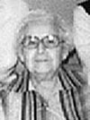
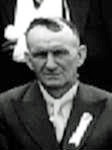

fiche familiale
*******************************************************************************
|   |
Bertha Beaudoin décède à l'âge de 95 ans. Naissance le 7 novembre 1896 à Ste-Cécile de Masham (La Pêche) Décès le 4 juin 1992 à Gatineau. Sépulture le 8 juin 1992 à Ste-Cécile de Masham (La Pêche) Père: Isaïe Baudoin Beaudoin Mère: Catherine Renaud (sa famille) Mariage le 9 août 1920 à Ste-Cécile de Masham (La Pêche) Âge de l'époux 34 ans, âge de l'épouse 23 ans. Époux: Cléophas Gauvreau décède à l'âge de 88 ans. Naissance le 14 mars 1886 à Ste-Cécile de Masham (La Pêche) Décès le 5 mars 1975 à Ste-Cécile de Masham (La Pêche) Père: Caleb Gauvreau Mère: Adéline Legros (sa famille) |
 |
Enfant 1 Roland Gauvreau (Renaud) décède à l'âge de 91 ans. Naissance le 8 fév 1921 à Ste-Cécile de Masham (La Pêche) Décès le 18 avril 2012 à Ste-Cécile de Masham (La Pêche) Fils adoptif Père: François-Xavier Renaud Mère: Caroline Liard Mariage le 25 novembre 1941 à Ste-Cécile de Masham (La Pêche) Conjointe: Lucile Brazeau décède à l'âge de 93 ans. Naissance le 16 août 1922 à Ste-Cécile de Masham (La Pêche) Décès le 13 mars 2016 à Ste-Cécile de Masham (La Pêche) Père: Napoléon Brazeau Mère: Philomène Coderre |
 |
Enfant 1 Charles-Omer Gauvreau décède à l'âge de 74 ans. Naissance le 15 oct 1944 à Ste-Cécile de Masham Décès le 7 mai 2019 à Ste-Cécile de Masham. |
 |
Enfant 2 Bernadette Gauvreau Mariage le 11 juin 1966 à Ste-Cécile de Masham (La Pêche) Conjoint: Hector D. Vaillant décède à l'âge de 62 ans Naissance le 14 mars 1946 à Ste-Cécile de Masham Décès le 18 nov 2008 à Hull. |
Enfant 3 Jean-Pierre Gauvreau
décède à l'âge de 21 ans
Naissance le 24 déc 1949 à Ste-Cécile de Masham
Décès le 8 oct 1971 à Ste-Cécile de Masham.
Enfant 4 Micheline Gauvreau
Mariage le 19 août 1972 à Ste-Cécile de Masham (La Pêche)
Conjoint: Michel Leblanc
-------------------------------------------------------------------------------
 |
Enfant 2 Marie-Thérèse Gauvreau Naissance le 10 avril 1927 à Ste-Cécile de Masham (La Pêche) Mariage le 26 août 1952 à Ste-Cécile de Masham (La Pêche) Conjoint: Roma Poitras décède à l'âge de 90 ans. Naissance le 15 jul 1926 à Poltimore Décès le 4 mars 2017 à Gatineau. Père: Eugène Poitras Mère: Marie-Orosie Lasalle |
Mariage le 1er déc 1973 à Grand-Mère
Conjointe: Diane Fontaine
Enfant 2 Francine Poitras
Mariage le 12 août 1989 à Hull
Conjoint: Michel St-Louis
Enfant 3 Henri Poitras
Mariage le 9 sept 1978 à Buckingham
Conjointe: Claire Mercier
Enfant 4 Denis Poitras
Enfant 5 Robert Poitras
-------------------------------------------------------------------------------
Enfant 3 Marie-Céline Gauvreau
Naissance le 26 oct 1937 à Montréal
Mariage le 25 octobre 1958 à Ste-Cécile de Masham (La Pêche)
Conjoint: Guy Courtemanche
Père: Roméo Courtemanche
Mère: Rita Gauthier
-------------------------------------------------------------------------------
| Page précédente | Page des ancêtres | Début de la page | Page d'accueil |